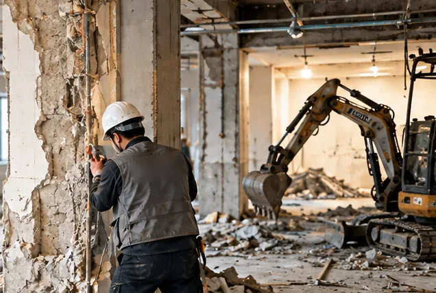
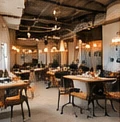
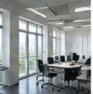
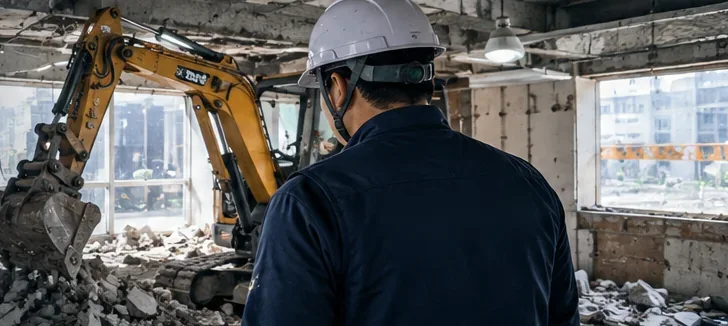
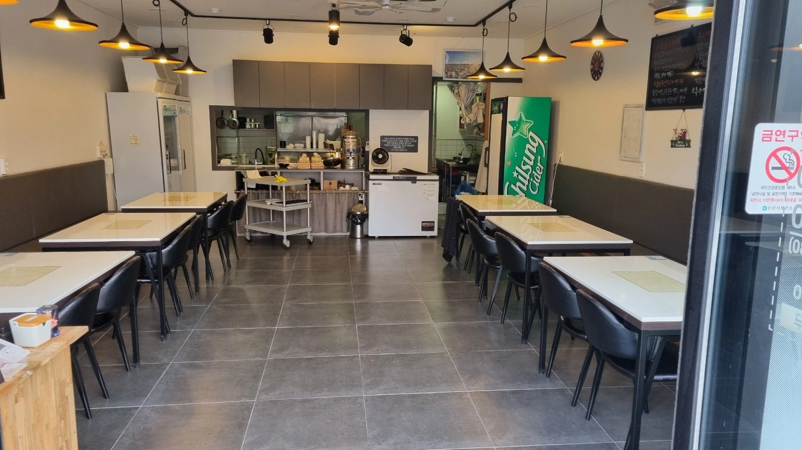
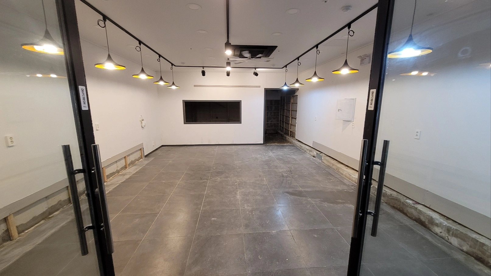
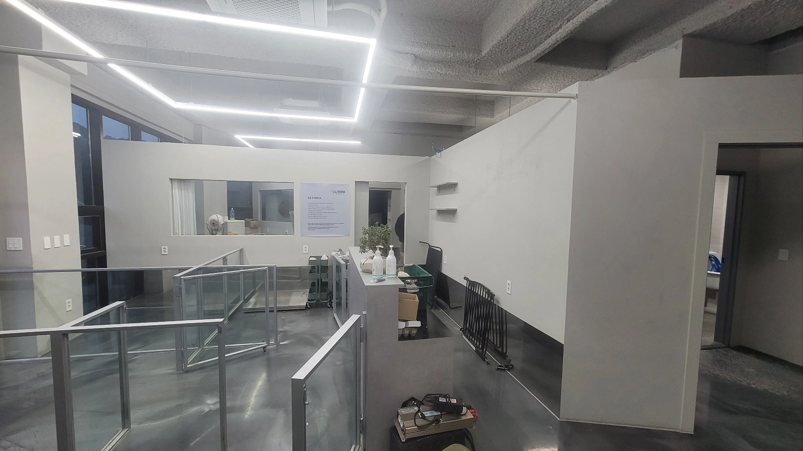
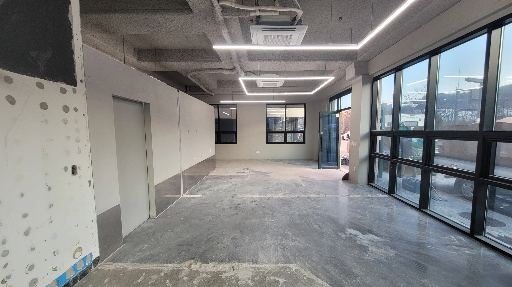

01 / 상가·점포
상가 내부철거 · 점포 폐업철거
카운터, 진열대와 같은 내부 시설의 철거 범위를 확인하고 건물의 기존 설비 및 유지할 시설을 구분하여 상담합니다.
SEOUL · EUNPYEONG-GU
상가·점포·사무실 철거와 원상복구 상담
은평구에서 폐업철거와 상가 원상복구를 준비하고 계신다면 현장 조건에 맞춰 견적을 상담해 보세요. 연신내·불광·응암·진관동 등 은평구 내 점포와 상업시설의 내부철거, 시설물 철거, 폐기물 처리 및 원상복구에 필요한 공사 범위를 함께 확인할 수 있습니다. 임대차 종료 일정과 현장 조건을 고려하여 철거 견적을 안내해 드립니다.
주요 상담 서비스: 상가철거, 점포 폐업철거, 내부철거, 식당·카페 철거, 학원·사무실 철거, 원상복구 및 관련 폐기물 처리
OUR SERVICES
폐업이나 임대차계약 종료로 기존 매장을 정리해야 하는 분들을 위해 철거 및 원상복구 범위를 함께 검토합니다. 점포 내부에 설치된 가벽, 천장, 바닥재, 카운터, 진열대 등 철거 대상에 따라 필요한 작업이 달라집니다.

카운터, 진열대와 같은 내부 시설의 철거 범위를 확인하고 건물의 기존 설비 및 유지할 시설을 구분하여 상담합니다.

주방 후드와 덕트, 조리대, 싱크대, 홀의 테이블 고정 시설, 카운터 및 인테리어 마감재 등을 확인합니다. 급배수·가스·전기 설비의 정리 범위는 현장 상태와 계약 조건에 따라 협의합니다.

교실과 업무 공간을 나누는 칸막이, 유리 파티션, 천장 마감재, 바닥재, 붙박이 가구 등의 철거를 상담할 수 있습니다. 기존 건물 시설과 유지해야 할 설비를 구분하여 공사 범위를 결정합니다.

상품 진열대, 고정 선반, 매장 내부 구조물, 조명, 간판 등 점포 운영에 사용했던 시설의 철거 범위를 검토합니다. 임대인이 요구한 반환 상태에 맞춰 추가 마감이나 보수가 필요한 부분도 상담할 수 있습니다.
서비스 이미지는 작업 내용을 설명하기 위한 예시입니다. 실제 철거 시공 사진은 아래 시공 전후 갤러리에서 확인할 수 있습니다.
LOCAL SERVICE GUIDE
은평구에는 연신내역과 불광역 주변 상가부터 응암동·역촌동의 생활밀착형 점포, 진관동의 상업시설까지 다양한 사업장이 있습니다. 같은 면적의 매장이라도 건물 구조와 접근 조건에 따라 철거 방법과 예상 비용이 달라질 수 있습니다.
특히 상층부 점포나 공용 출입구를 이용하는 상가라면 엘리베이터 사용, 공용 복도 보호, 폐기물 이동 동선, 작업 차량의 접근 가능 여부를 확인해야 합니다. 건물 관리 규정에 따라 소음이 발생하는 작업의 가능 시간도 달라질 수 있습니다.
상담 시 사업장 주소와 층수, 내부 사진, 철거 희망일을 전달해 주시면 현장에서 확인해야 할 사항과 견적에 필요한 정보를 안내해 드립니다.
RESTORATION CHECK
임대차계약 내용과 현장 상태에 따라 반환 조건이 달라질 수 있습니다.
RESTORATION
점포를 비우는 것과 임대차계약에 따른 원상복구를 마치는 것은 다를 수 있습니다. 기존 시설을 철거한 후에도 바닥 마감, 벽면 보수, 배선 정리, 간판 철거 등의 작업이 추가로 필요할 수 있기 때문입니다.
철거 상담 시 임대차계약서에 명시된 원상복구 조건과 임대인 요구사항을 함께 확인할 수 있도록 안내합니다.
원상복구 범위는 계약 당시의 점포 상태, 임대차계약 내용, 임대인과의 협의에 따라 달라집니다. 철거 전에 반환 조건을 전달해 주시면 불필요한 추가 작업을 줄일 수 있도록 필요한 공사 항목을 구분해 드립니다.
COST & ESTIMATE
상가철거 비용은 단순히 매장 면적만으로 정해지지 않습니다. 내부 시설물의 종류, 바닥과 천장 마감재, 철거할 설비의 수량, 발생하는 폐기물의 양과 반출 방법 등이 견적에 반영될 수 있습니다.
실제 철거 대상 공간과 작업 범위
가벽, 카운터, 천장, 바닥, 주방 설비 등
철거 후 발생하는 자재의 종류와 처리량
층수, 엘리베이터, 계단 및 차량 접근
공사 가능 시간과 점포 반환 기한
철거 후 마감 및 보수 작업의 포함 여부
ESTIMATE PREPARATION
매장의 현재 상태와 반환 조건을 함께 전달하면 필요한 공사 범위와 폐기물 처리 항목을 보다 구체적으로 검토할 수 있습니다.
은평구 내 위치, 층수, 전용면적과 작업 공간을 알려주세요.
출입구, 천장, 바닥, 주방·고정 가구 등 제거가 필요한 시설을 촬영해 주세요.
임대차계약서의 관련 조항, 임대인 요구사항, 반환일 및 작업 가능 시간을 확인해 주세요.
엘리베이터 이용, 주차 공간, 차량 접근과 건물 관리 규정을 알려주세요.
HOW IT WORKS
폐업 일정이 정해져 있거나 임대인과 점포 반환 날짜를 협의 중이라면 현재 상황부터 알려주세요. 전달받은 현장 정보를 바탕으로 필요한 철거 범위와 견적 검토 사항을 상담해 드립니다.
일반적으로 현장 정보 확인, 철거 대상 및 원상복구 범위 협의, 견적과 일정 검토, 작업 진행 등의 과정이 필요합니다. 실제 진행 순서와 작업 기간은 현장 조건과 협의 결과에 따라 달라질 수 있습니다. 임대차 종료일까지 시간이 부족한 경우에도 희망 일정을 전달해 주시면 공사 가능 여부를 함께 검토할 수 있습니다.
TRACK RECORD
상가·병원·학원·카페·식당 등 다양한 상업시설에서 진행한 폐업철거 및 원상복구 관련 누적 공사 실적입니다.
위 수치는 서비스 제공 업체 점포리턴의 전체 지역 누적 실적이며 은평구에서만 진행한 공사 건수를 의미하지 않습니다. 현장별 공사 범위와 시설 상태에 따라 필요한 작업은 달라집니다.
REAL PROJECTS · BEFORE & AFTER
실제 철거 공사의 시공 전후 모습을 확인해 보세요. 기존 점포 내부와 철거 후 공간의 변화를 비교하실 수 있습니다.




FREQUENTLY ASKED QUESTIONS
철거 범위부터 폐기물 처리, 원상복구와 견적까지 자주 궁금해하시는 사항을 확인해 보세요.
가벽, 카운터, 고정 가구 등 일부 시설만 철거해야 하는 상황도 상담할 수 있습니다. 철거할 시설과 유지할 시설을 구분해 전달해 주세요. 실제 작업 가능 여부는 시설 구조와 현장 조건에 따라 검토합니다.
임대차계약서의 원상복구 조항과 임대인과의 협의 내용에 따라 달라집니다. 입점 당시 사진이나 임대인이 요청한 반환 조건이 있다면 상담 시 함께 전달해 주세요.
철거 공사와 관련된 폐기물 처리 범위를 함께 상담하실 수 있습니다. 폐기물의 종류와 양, 반출 조건에 따라 처리 방법과 비용이 달라질 수 있습니다.
2026년 희망리턴패키지 점포철거비 지원 접수는 10월 21일 18시에 마감되었습니다. 향후 추가 모집이나 새로운 지원사업은 소상공인시장진흥공단의 공식 공고를 확인하셔야 합니다. 철거 견적 상담과 정부지원사업 신청 및 심사는 별도로 진행됩니다.
점포 주소, 대략적인 면적, 내부 사진, 철거할 시설, 희망 작업일을 알려주시면 됩니다. 원상복구가 필요한 경우 임대인의 요구사항과 계약 종료일도 함께 전달해 주세요.
READY TO TALK?
폐업을 준비하거나 기존 점포를 임대인에게 반환해야 한다면 견적 상담을 신청해 보세요. 내부 시설 철거부터 폐기물 처리, 원상복구 범위와 예상 비용까지 사업장의 상황에 맞춰 검토해 드립니다.
연신내·불광·응암·녹번·역촌·진관동 등 은평구 내 점포의 위치와 철거 희망 일정을 알려주시면 상담에 필요한 사항을 안내해 드리겠습니다.
은평구 철거·원상복구 견적 상담 신청하기